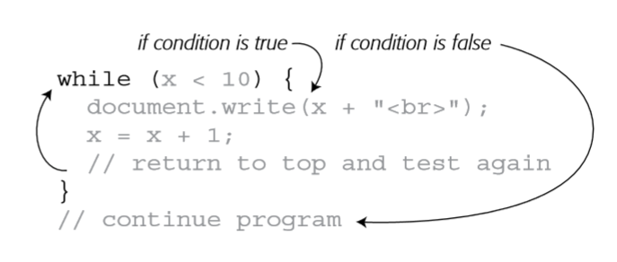

Looping structures
Introduction
- Sometimes a script needs to repeat the same series of steps over and over again
- In programming language, performing the same task over and over is called a loop
- Several different types
While Loop
- A while loop repeats a chunk of code as long as a particular condition is true
while(condition) {
//javascript to repeat
}

While with arrays
- A while loop can be used to iterate through array's elements
let days = ['Mon', 'Tues', 'Wed', 'Thurs', 'Fri', 'Sat', 'Sun'];
let counter = 0;
while (counter < days.length) {
document.write(days[counter] + ', ');
counter++;
}

Example
- Action: Write a JavaScript program to read ten array values, determine the largest value, and print it
Student Exercise
- Decription: The Math object allows you to perform mathematical tasks.
- Math.pow(x,y); - Returns the value of x to the power of y
- Action: Write a JavaScript program to write the sum of squares of the numbers from 101 to 150
- Time to accomplish: 15 minutes.
Exercise 1 Solution
function sumPow(num1, num2){
let result = 0;
let i = num1;
while(i <= num2){
result += Math.pow(i, 2);
i++;
}
return result;
}
console.log(sumPow(1, 4)); // 1 + 4 + 9 + 16 = 30
console.log(sumPow(101, 150)); // 797925
Example
- Action: Write a JavaScript program that will read in a number and write out its digits
Do/While loops
- Less common type of loop
- In this type of loop, the conditional test happens at the end, after the loop has run
- As a result, the JavaScript code within the curly braces always run at least once, even if the condition isn’t ever true
do {
// javascript to repeat
} while (condition) ;
For loops
- For loops are usually used for repeating a series of steps a certain number of times, so they often involve some kind of counter variable, a conditional test, and a way of changing the counter variable.
- A while loop, with fewer lines of code
for (initialisation; condition; increment/decrement ) {
//perform JavaScript
}
let num = 1;
while (num <= 100) {
document.write('Number ' + num + '
');
num += 1;
}
for (let num=1; num<=100; num++) {
document.write('Number ' + num + '
');
}

For with arrays
let days = ['Monday', 'Tuesday', 'Wednesday', 'Thursday', 'Friday', 'Saturday', 'Sunday'];
for (let i=0; i < days.length; i++) {
document.write(days[i] + ', ');
}
let example = ['first','second','third','last'];
for (let j = example.length ; j > 0; j--) {
document.write(example[j-1] + '
');
}
For-of Loop
- New type of for loop for going through arrays (ES6)
- In this type of loop does not have a condition
- It is designed to loop every item in an array
let arr = [2,3,6];
for(let num of arr){
console.log(num);
}
Break and Continue
- break and continue give more control in looping things
- break - When a loop executes break, it immediately exits the loop structure
- continue - When a loop executes continue, it skips the current cycle and continues
Break and Continue
let days = ['Monday', 'Tuesday', 'Wednesday', 'Thursday', 'Friday', 'Saturday', 'Sunday'];
for (let i=0; i < days.length; i++) {
if(days[i] === "Thursday"){
break;
}
console.log(days[i]);
}
// Will print "Monday", "Tuesday", "Wednesday"
let days = ['Monday', 'Tuesday', 'Wednesday', 'Thursday', 'Friday', 'Saturday', 'Sunday'];
for (let i=0; i < days.length; i++) {
if(days[i] === "Thursday"){
continue;
}
console.log(days[i]);
}
// Will print "Monday", "Tuesday", "Wednesday", "Friday", "Saturday", "Sunday"
Examples
App for organising groceries
Adding items to the groceries list
let groceries = ["Bread", "Milk", "Butter"];
function addToGroceriesList(item){
if(typeof(item) === "string"){ // Checking if item is string
groceries.push(item);
console.log(`You have added ${item} to the list!`);
} else {
console.log(`The item ${item} was not added to the list. Sorry.`);
}
}
// Calling the adding function
addToGroceriesList("Salad");
Reading all items from the groceries list
groceries = ["Bread", "Milk", "Butter", "Salad"];
function showGroceriesList(){
let i = 0, listNum = 1; // listNum = counter for item numeration
console.log("My groceries list:");
while(i < groceries.length){
if(groceries[i] !== null){ // a check to not show deleted items
console.log(`${listNum}. ${groceries[i]}`);
listNum++; // We add one if the item is not deleted (null)
}
i++;
}
}
// Calling the showing function
showGroceriesList();
Finding item in the groceries list
groceries = ["Bread", "Milk", "Butter", "Salad"];
function checkForItemInGroceriesList(item){
for(let listItem of groceries) {
if(listItem === item){ // Check if the item is the inputted item
console.log(`The item ${item} was found!`);
return listItem; // return always goes out of the function
}
}
console.log(`There was no ${item} item in the list!`);
return null; // Will not execute if the previous return is executed
}
// Calling the check item function
let searchedItem = checkForItemInGroceriesList("Butter"); // "Butter"
let searchedItem2 = checkForItemInGroceriesList("Sugar"); // null
Deleting an item from the groceries list
groceries = ["Bread", "Milk", "Butter", "Salad"];
function deleteItemFromGroceries(item){
for(let i = 0; i < groceries.length; i++){
if(groceries[i] === item){
console.log("Item has been deleted!");
groceries[i] = null; // we set the deleted item to null
return true;
}
}
return false;
}
// Calling the delete function
deleteItemFromGroceries("Salad"); // true
deleteItemFromGroceries("oil"); // false